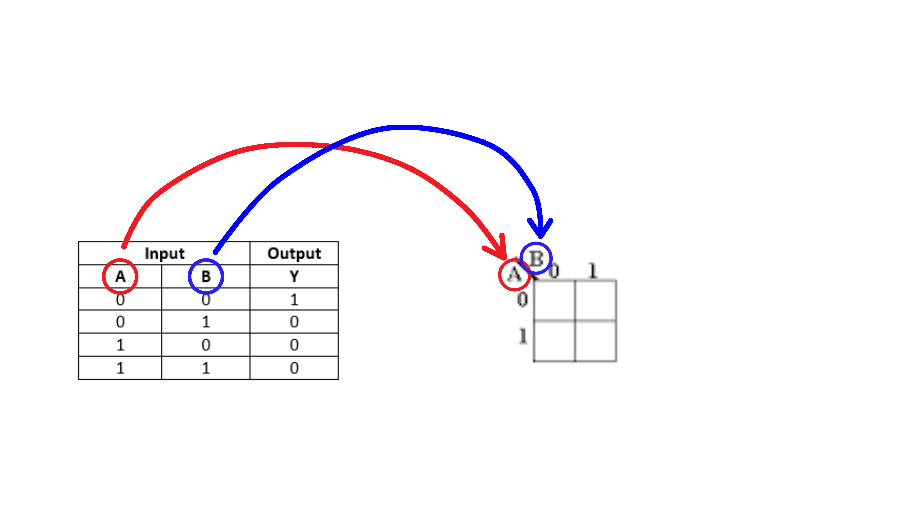
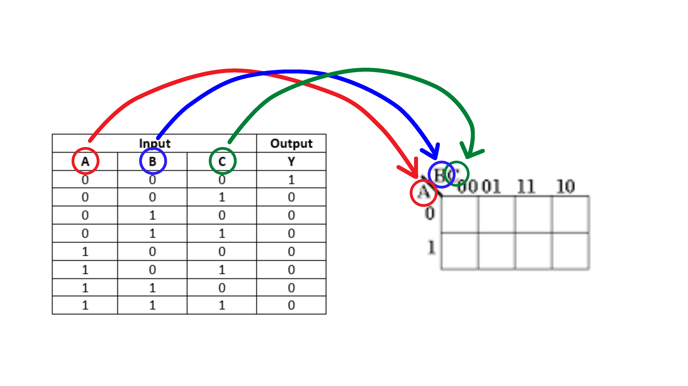
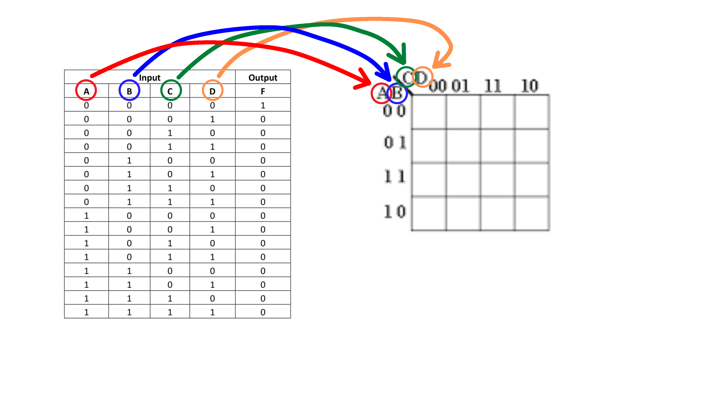

Types of Maps and How to Populate Them
Is it 2, 3 or 4?
Remember from your brief History of the Maps Lesson where Maurice Karnaugh is the "Father" of Karnaugh Maps creating a new technique for represnting boolean expressions(in truth Table form), this technique lent itself to then be used in the 3 Main types of Karnaugh Maps today. Firstly we have to ask ourselves how does a truth table relate to a karnaugh map? Well the amount of inputs in a Truth Table directly relate to the type of Karnaugh Map (2-Input, 3-Input, 4-Input) needed to represnent the Truth Table. See examples below:

Figure1.1: 2-Input Truth Table and Karnaugh Map

Figure1.2: 3-Input Truth Table and Karnaugh Map

Figure1.3: 4-Input Truth Table and Karnaugh Map
Let's Populate!
Now that we have seen the types of Karnaugh Maps, let's take a look into how do we populate each type.
Take a look at the video below to see how to populate The Maps.
Think you are ready to learn more about the Maps Click Here to here to continue your journey onto grouping and Simplifying the Maps

The Bool School